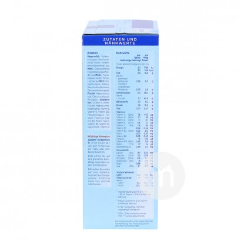

<!DOCTYPE html>
<html lang="en">

<head>
    <meta charset="UTF-8">
    <meta name="viewport" content="width=device-width, initial-scale=1.0">
    <meta http-equiv="X-UA-Compatible" content="ie=edge">
    <title></title>
    <link rel="stylesheet" href="../css/base.css">
    <link rel="stylesheet" href="../css/FD.css">
    <script src="../js/FD.js"></script>
</head>

<body>
    <div id="box">
        <div class="bigimg">
        </div>
        <div class="imgs">

        </div>
        <div class="box3">

            <ul class="samllimg">
            </ul>
        </div>
        <!--  -->
        <div class="tops"></div>
        <div class="bottoms"></div>
    </div>
</body>

<script>
    fangdajing({
        ele: 'box',//最外层盒子的id(必填)
        imglist: ["../images/fdj01.jpg", "../images/faj02.jpg", "../images/faj03.jpg", "../images/faj04.jpg", "../images/faj05.jpg"],//图片数据(必填)
        scal: 2,//大图放大倍数(选填,默认是2倍)
        speed: 1,//小图运动的图片个数(选填,默认是一次动一张图)
        Width: 80,//小图的宽度 宽度 + 左右边框 左右padding
        BoPa: 8 //左右边框加左右padding的和
    });
</script>

</html>